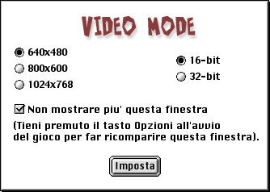

PER INIZIARE
PER INIZIARE
MODALITA' VIDEO
La prima volta che utilizzerai Cro-Mag Rally entrerai nella finestra di dialogo " modalità video":

Il gioco è impostato con i parametri default sopra riportati. Devi stare molto attento a modificarli, dal momento che ogni modifica a tali parametri richiederebbe più VRAM. I Mac con solo 6MB di VRAM devono utilizzare i parametri minimi sopra riportati, altrimenti non ci sarebbe VRAM a sufficienza per tutte le configurazioni del gioco. Ne risulterebbero ridotte anche le prestazioni. Più alta è la risoluzione impostata, più lento sarà lo svolgimento del gioco.